ЗАДНИЙ БАМПЕР > РАЗБОРКА |
| 1. СНИМИТЕ ЗАДНИЙ ПОГЛОТИТЕЛЬ ЭНЕРГИИ УДАРА |
| 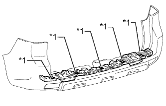 |
Удалите 5 отрезков двухсторонней клейкой ленты и снимите задний поглотитель энергии удара с облицовки заднего бампера.
| *1 | Двухсторонняя клейкая лента |
| 2. СНИМИТЕ НАПОЛЬНЫЙ ПРОВОД № 5 (для моделей с сенсорной системой помощи при парковке TOYOTA, с задними противотуманными фонарями) |
| 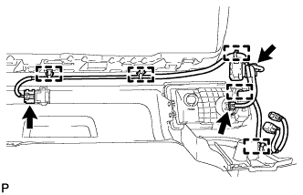 |
Отсоедините 3 разъема.
Освободите 5 зажимов и снимите напольный провод № 5.
| 3. СНИМИТЕ НАПОЛЬНЫЙ ПРОВОД № 5 (для моделей с сенсорной системой помощи при парковке TOYOTA, без задних противотуманных фонарей) |
| 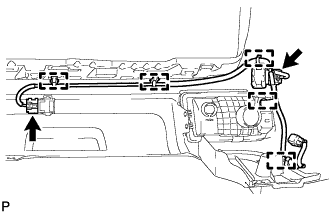 |
Отсоедините 2 разъема.
Освободите 5 зажимов и снимите напольный провод № 5.
| 4. СНИМИТЕ НАПОЛЬНЫЙ ПРОВОД № 5 (для моделей без сенсорной системы помощи при парковке TOYOTA, с задними противотуманными фонарями) |
| 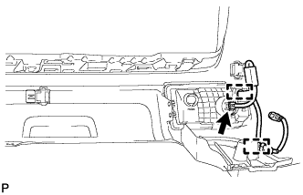 |
Отсоедините разъем.
Освободите 2 зажимов и снимите напольный провод № 5.
| 5. СНИМИТЕ НАПОЛЬНЫЙ ПРОВОД № 4 (для моделей с сенсорной системой помощи при парковке TOYOTA, с задними противотуманными фонарями) |
| 6. СНИМИТЕ НАПОЛЬНЫЙ ПРОВОД № 4 (для моделей с сенсорной системой помощи при парковке TOYOTA, без задних противотуманных фонарей) |
| 7. СНИМИТЕ НАПОЛЬНЫЙ ПРОВОД № 4 (для моделей без сенсорной системы помощи при парковке TOYOTA, с задними противотуманными фонарями) |
| 8. СНИМИТЕ ФИКСАТОР УЛЬТРАЗВУКОВОГО ДАТЧИКА (для моделей с сенсорной системой помощи при парковке TOYOTA) |
| 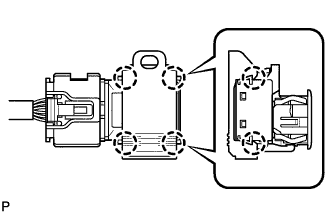 |
Открепите 4 захвата и снимите фиксатор ультразвукового датчика.
| 9. СНИМИТЕ УЛЬТРАЗВУКОВОЙ ДАТЧИК № 1 (для моделей с сенсорной системой помощи при парковке TOYOTA) |
| 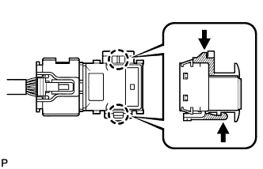 |
Отсоедините разъем.
Освободите 2 захвата и снимите ультразвуковой датчик № 1.
| 10. СНИМИТЕ ДЕРЖАТЕЛЬ УЛЬТРАЗВУКОВОГО ДАТЧИКА № 2 (для моделей с сенсорной системой помощи при парковке TOYOTA) |
| 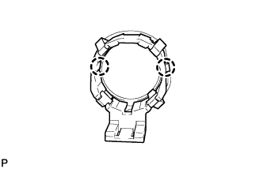 |
Освободите 2 захвата и снимите держатель ультразвукового датчика № 2.
| 11. СНИМИТЕ ЛЕВУЮ ЗАЩИТУ ЗАДНЕГО БАМПЕРА |
| 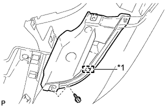 |
Выверните винт.
Освободите направляющую и снимите защиту заднего бампера.
| *1 | Направляющая |
| 12. СНИМИТЕ ПРАВУЮ ЗАЩИТУ ЗАДНЕГО БАМПЕРА |
| 13. СНИМИТЕ ЛЕВЫЙ ЗАДНИЙ ПРОТИВОТУМАННЫЙ ФОНАРЬ В СБОРЕ (для моделей с задними противотуманными фонарями) |
| 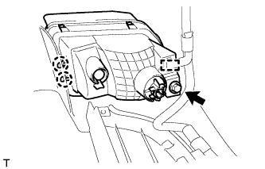 |
Выверните винт.
Отцепите 2 захвата, освободите зажим и снимите лампу.
| 14. СНИМИТЕ ПРАВЫЙ ЗАДНИЙ ПРОТИВОТУМАННЫЙ ФОНАРЬ В СБОРЕ (для моделей с задними противотуманными фонарями) |
| 15. СНИМИТЕ ЛЕВЫЙ УГОЛКОВЫЙ ОТРАЖАТЕЛЬ (для моделей без задних противотуманных фонарей) |
| 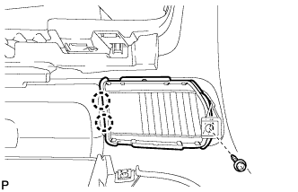 |
Выверните винт.
Освободите 2 захвата и снимите уголковый отражатель.
| 16. СНИМИТЕ ПРАВЫЙ УГОЛКОВЫЙ ОТРАЖАТЕЛЬ (для моделей без задних противотуманных фонарей) |
| 17. СНИМИТЕ ПРАВЫЙ УДЛИНИТЕЛЬ ЗАДНЕГО БАМПЕРА |
| 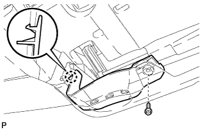 |
Выверните винт.
Освободите захват и снимите удлинитель заднего бампера.
| 18. СНИМИТЕ НАКЛАДКУ ЗАДНЕГО БАМПЕРА (для 5-дверных моделей) |
| 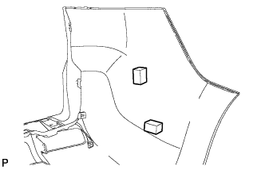 |
Снимите 4 накладки заднего бампера.
| 19. СНИМИТЕ НАКЛАДКУ ЗАДНЕГО БАМПЕРА (для 3-дверных моделей) |
| 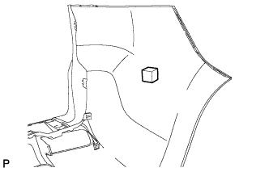 |
Снимите 2 накладки заднего бампера.